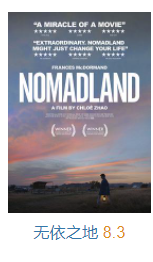

无依之地
< a href = "https://movie.douban.com/subject/30458949/?tag=%E7%83%AD%E9%97%A8&from=gaia">
导演: 赵婷
编剧: 赵婷 / 杰西卡·布鲁德
主演: 弗兰西斯·麦克多蒙德 / 大卫·斯特雷泽恩 / 德里克·贾尼斯 / 泰·斯特雷泽恩 / 卡特·克利福德 / 更多...
类型: 剧情
制片国家/地区: 美国 / 德国
语言: 英语
上映日期: 2020-09-11(威尼斯电影节) / 2021-01-29(美国) / 2021-02-19(美国网络)
片长: 108分钟
又名: 游牧人生(台) / 浪迹天地(港) / 游牧之地
编剧: 赵婷 / 杰西卡·布鲁德
主演: 弗兰西斯·麦克多蒙德 / 大卫·斯特雷泽恩 / 德里克·贾尼斯 / 泰·斯特雷泽恩 / 卡特·克利福德 / 更多...
类型: 剧情
制片国家/地区: 美国 / 德国
语言: 英语
上映日期: 2020-09-11(威尼斯电影节) / 2021-01-29(美国) / 2021-02-19(美国网络)
片长: 108分钟
又名: 游牧人生(台) / 浪迹天地(港) / 游牧之地